Österreichs Nachkriegskultur & Das SPÖ-Netzwerk
1. Das Vakuum nach 1945
Nach der Vernichtung existierte im Nachkriegs-Österreich kein tragfähiges intellektuelles Fundament mehr.
Diese vermeintliche Geisteselite weiste eine direkte Kontiguität zum organisierten Verbrechen, der Pornografie und dem Rotlichtmilieu auf.
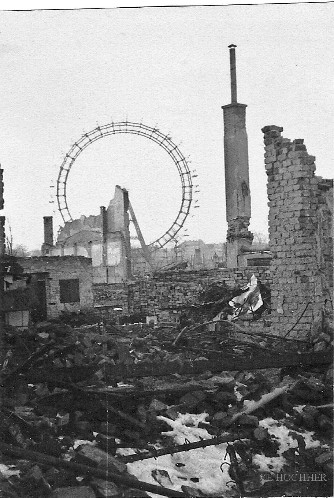
2. Otto Mühl & Der Wiener Aktionismus
Der Wiener Aktionismus wurde vom staatlich geförderten Kulturbetrieb zur intellektuellen Befreiungskunst hochstilisiert.
- Struktureller Sadismus: Mühl gründete die Friedrichshof-Kommune (AA-Kommune), die sich als totalitäres Sekten- und Ausbeutungssystem entpuppte.
- Justizielle Verurteilung: Mühl wurde wegen Kindesmissbrauchs, Vergewaltigung und schweren Sittlichkeitsdelikten verurteilt.
3. Jack Unterweger: Der geschätzte Häfpoet
Der verurteilte Frauenmörder wurde im Gefängnis durch die Fürsprache der Wiener Schickeria (u.a. Erika Pluhar) zum literarischen Genie hochgeschrieben.
- ORF & Kulturbetrieb: Nach seiner vorzeitigen Entlassung wurde der Serienmörder als Paradebeispiel gelungener Resozialisierung hofiert.
- Blutige Realität: Während er in Talkshows auftrat, ermordete er im Rotlichtmilieu von Wien, Graz und Los Angeles weitere Prostituierte bestialisch.
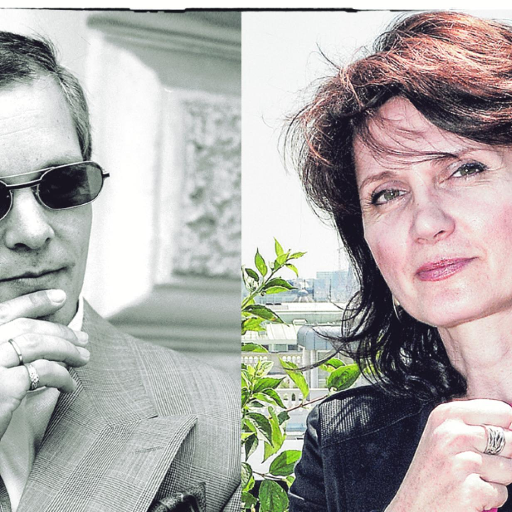
4. H.C. Artmann & Thomas Bernhard
H.C. Artmann: Erhob Dialekt- und Sprachspielereien zum pseudo-intellektuellen Kult und stützte die Romantisierung des Wiener Unterwelt-Jargons.
Thomas Bernhard: Lebte vom kalkulierten Dauerskandal. Bernhard war kein systemischer Analytiker, sondern inszenierte seine Nestbeschmutzung als lukratives Geschäftsmodell.
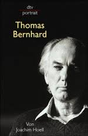
5. Ernst Fuchs: Mystiker & Hurenbock
Ernst Fuchs und die Wiener Schule des Phantastischen Realismus besaßen unbestreitbares handwerkliches Können, doch ihr Habitus war pure Hochstapelei.
- Exhibitionismus: Fuchs inszenierte sich als mystischer Prophet, lebte jedoch eine sexuelle Obsession im Pelzmantel aus.
- Die Hütteldorfer Villa: Kein Ort des intellektuellen Diskurses, sondern ein neobarockes Bordell-Szenario mit direkter Brücke zur Wiener Halbwelt.
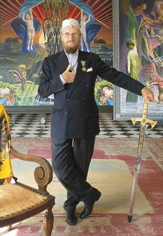
6. Der Club 45: Die informelle Machtzentrale
Gegründet im Café Demel von Udo Proksch, wurde der Club 45 zum Synonym für die unheilvolle Verfilzung der SPÖ-Führungsriege mit der Halbwelt.
- Die SPÖ-Elite vor Ort: Minister, Bürger- und Kanzlerkandidaten trafen hier auf Zuhälter, Waffennhändler und Künstlertypen.
- Informelles Kartell: Hier wurden Posten besetzt, Geschäfte an der Justiz vorbeigeschleust und Provokationskünstler geschützt.

7. Der Fall Lucona: Das SPÖ-Netzwerk
Der Untergang des Frachters Lucona (6 Tote) zur Erpressung von Versicherungsgeldern legte die tiefen Verstrickungen der SPÖ offen.
Erst nach jahrelangem politischen und justiziellen Abwehrkampf brach das Netzwerk zusammen – es folgte die Demission führender Köpfe.
8. Die Akteure des Lucona-Komplexes
- Udo Proksch: Netzwerker, Club-45-Macher und sechsfacher Mörder. Das Bindeglied zwischen Wiener Szene, Kunst und SPÖ-Führung.
- Leopold Gratz: SPÖ-Außenminister & Nationalratspräsident. Musste wegen Gefälligkeitsbriefen für Proksch zurücktreten.
- Karl Blecha: SPÖ-Innenminister. Wegen Vertuschung von Beweismitteln im Fall Lucona gerichtlich verurteilt.
- Heinz Fischer: Damaliger SPÖ-Klubobmann und Proksch-Bekannter aus dem Club 45.
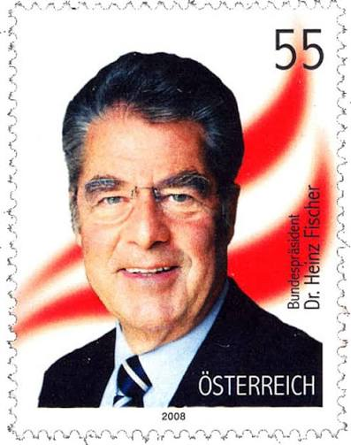
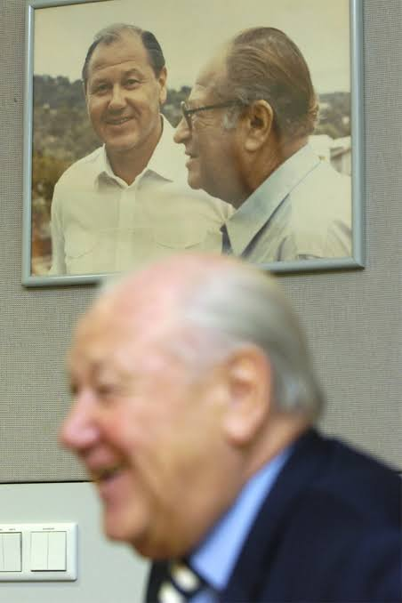
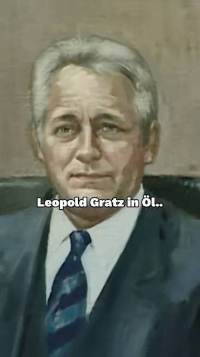
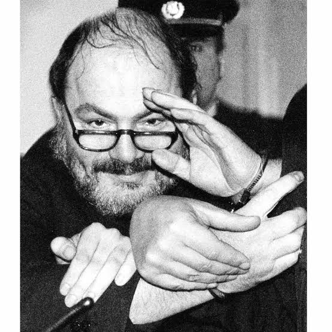
9. Austropop I: Danzer & Ludwig Hirsch
Die Austropop-Szene lieferte die musikalische Romantisierung des Wiener Prekariats und der Halbwelt.
- Georg Danzer: Lieferte mit dem „Nackerten im Hawelka“ oder Songs über Zuhälter die passende Folklore für die Wiener Subkultur.
- Ludwig Hirsch: Vermarktete morbide Ästhetik, Depression und Suff als tiefe Philosophie – im Kern die Ausbeutung asozialer Weinerlichkeit.

10. Stefan Weber (Drahdiwaberl) & Falco
Bei Drahdiwaberl kollabierten Musik, Pornografie und Fäkalhumor auf der Bühne im Namen vorgeblicher Systemkritik.
- Stefan Weber: Exzessive Bühnenshows mit Schlamm, Splatter und Obszönitäten ergötzten das bürgerlich-linke Publikum.
- Falco (Johann Hölzel): Entstieg als Bassist von Drahdiwaberl direkt der Wiener Club- und Drogenszene und wurde zum globalen Exportgut.
11. Ostbahn-Kurti & Lukas Resetarits
Willi Resetarits (Ostbahn-Kurti): Die Kunstfigur gab dem kleinkriminellen Strizzi-Milieu ein sympathisches, heiteres Gesicht.
Lukas Resetarits & Kottan ermittelt: Im Kabarett und im Fernsehen wurde die komplette Korruption und Unfähigkeit von Justiz und Polizei ins Lächerliche gezogen und dadurch systemisch verharmlost.
12. Fazit: Die Herrschaft des Gesindels
Österreich besaß nach dem Krieg keine echte Geisteselite, sondern ein Machtkartell aus Provokations-Künstlern, Halbwelt-Akteuren und SPÖ-Politikern.
Geld, Medienmacht des ORF und gegenseitige politische Immunität schufen einen Zustand, der das Land kulturell bis heute prägt.
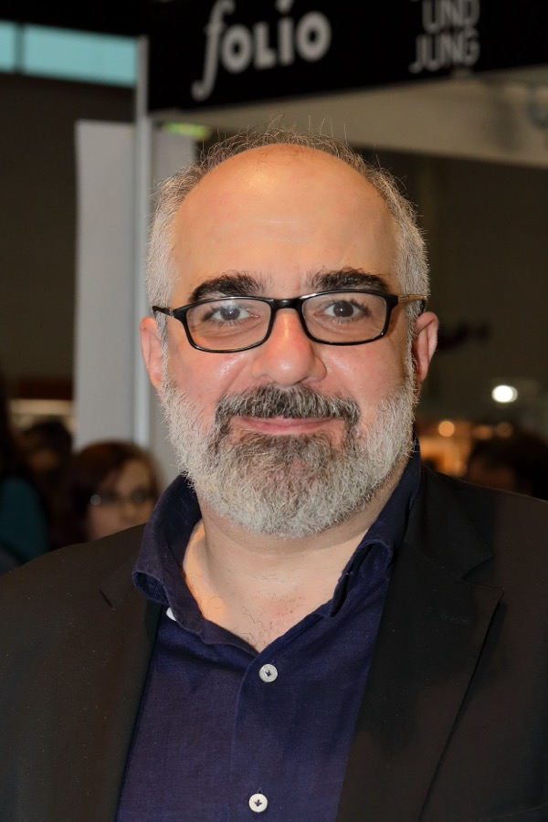
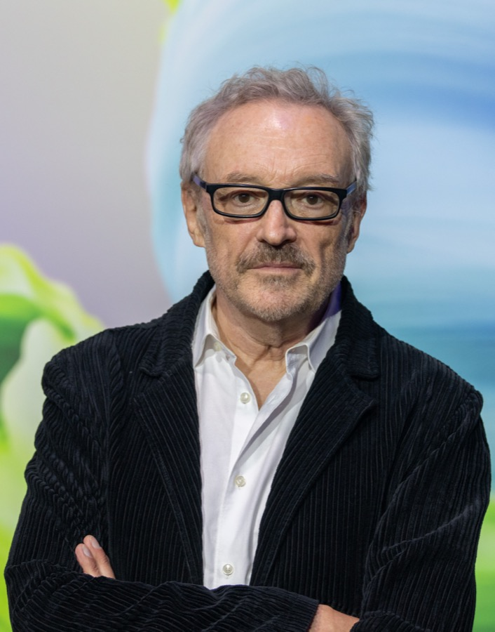
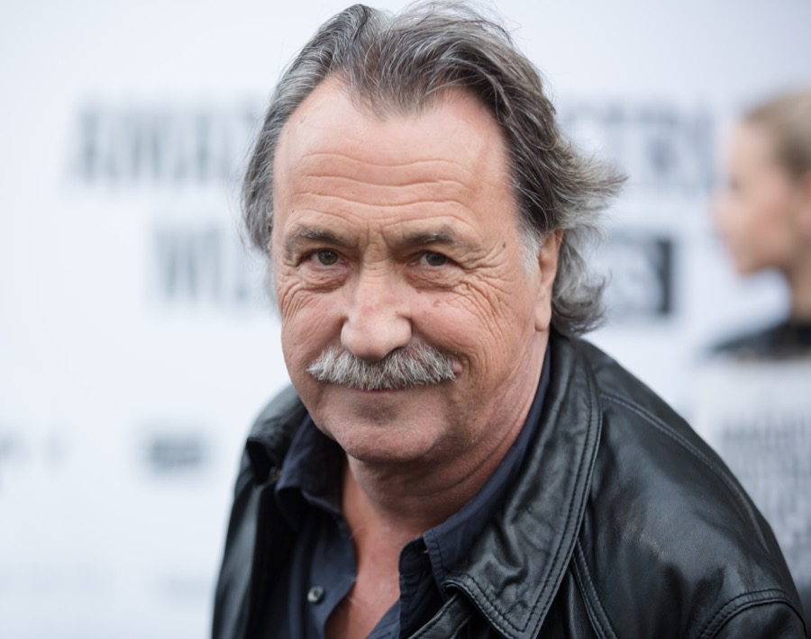
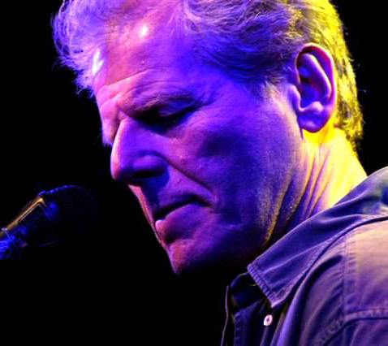
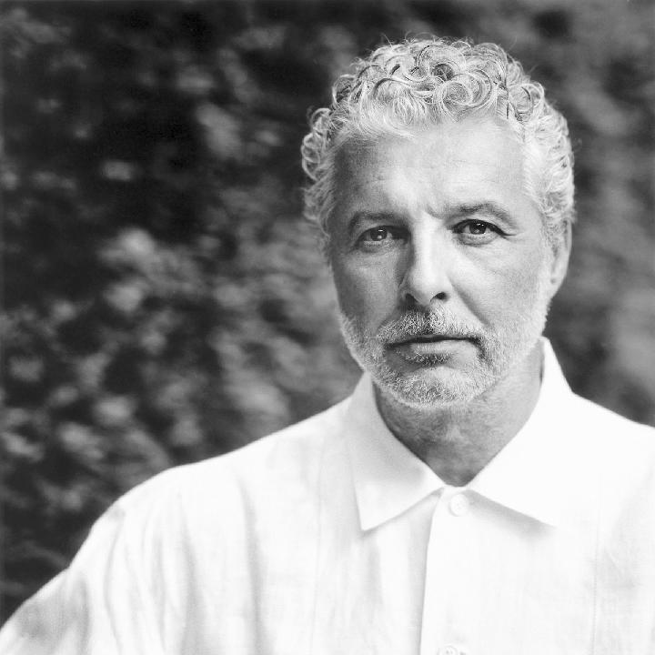
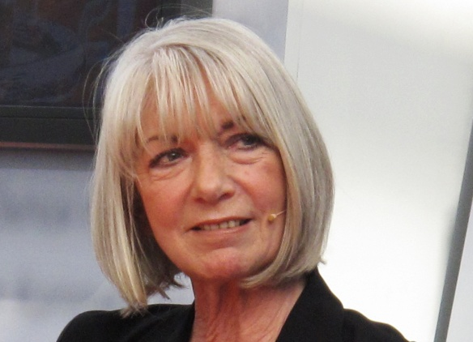
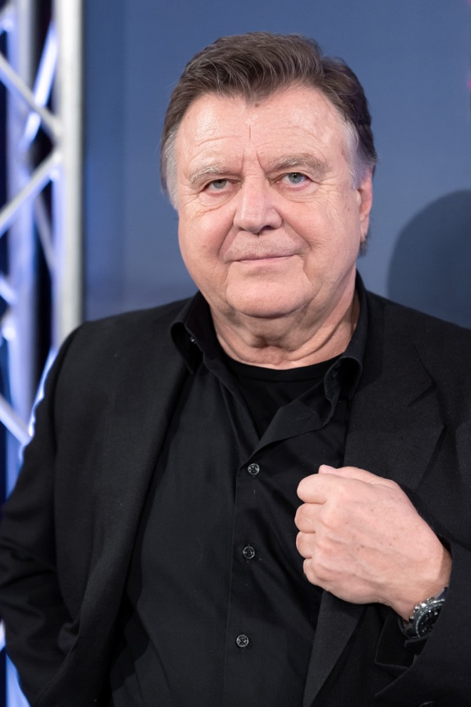
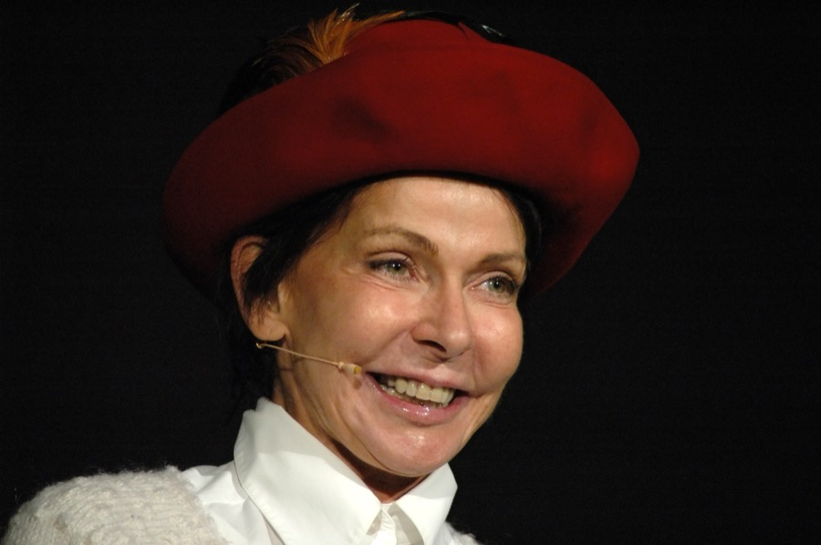
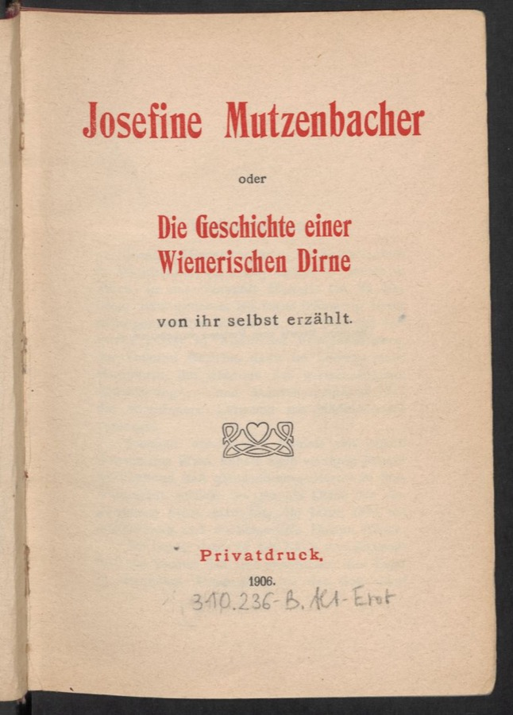
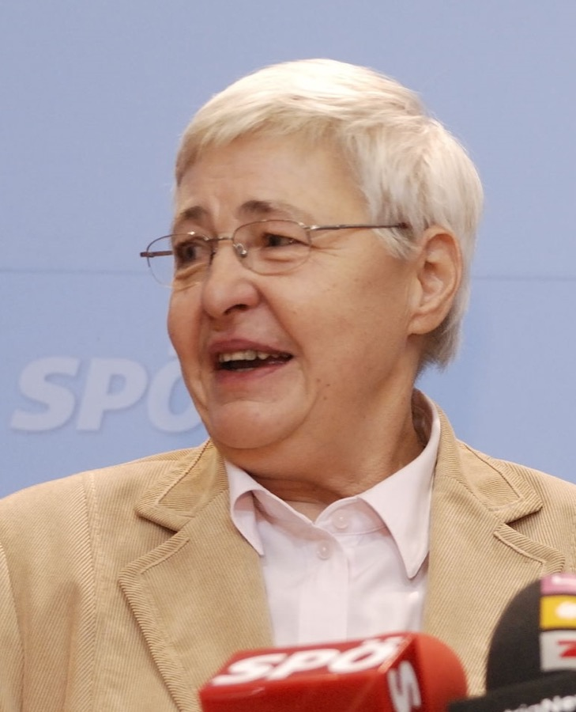
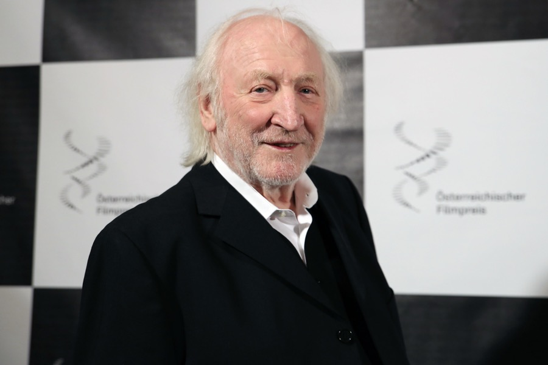
13. 3D-Galerie: Prominenz & Milieu
Seit 45 ist das Kulturleben der Alpenrepublik durch politisch willfährige Dilettanten monopolisiert, die den Mächtigen nicht nur die Schuhe lecken.
- Michael Niavarani & Josef Hader: Schmähstade und Talentbefreite, Komplexbeladene weit jenseits der Midlife-Crisis, die glauben, ihre Psychosen würden das Publikum interessieren.
- Gert Steinbäcker (STS): Hymnen der Austropop-Nostalgie.
- Georg Danzer: Austropop-Legende & Chronist der Wiener Halbwelt.
- André Heller & Erika Pluhar: Wiener Schickeria, Kultur-Subventionen & Salon-Avantgarde.
- Jelinek, Bernhard & Unterweger: Literaturbetrieb zwischen Nestbeschmutzung, Skandal und Häfenpoesie.
- Ernst Fuchs, Stefan Weber & Falco: Exzess auf Leinwand und Bühne, von der Halbwelt exportiert.
- Ostbahn-Kurti & Lukas Resetarits: Verharmlosende Vorstadt-Folklore statt Systemkritik.
- Josef Fritzl & Heinz Fischer: Das Grauen im Keller und die politische Fassade darüber.
- Dolores Schmidinger & Johanna Dohnal: Zwischen Kabarett-Diva und der einzigen echten Reformerin im System.
- Přiklopil, Mutzenbacher & Sackbauer: Verbrechen, erotische Fiktion und Wiener Vorstadt-Mythos in einer Vitrine.
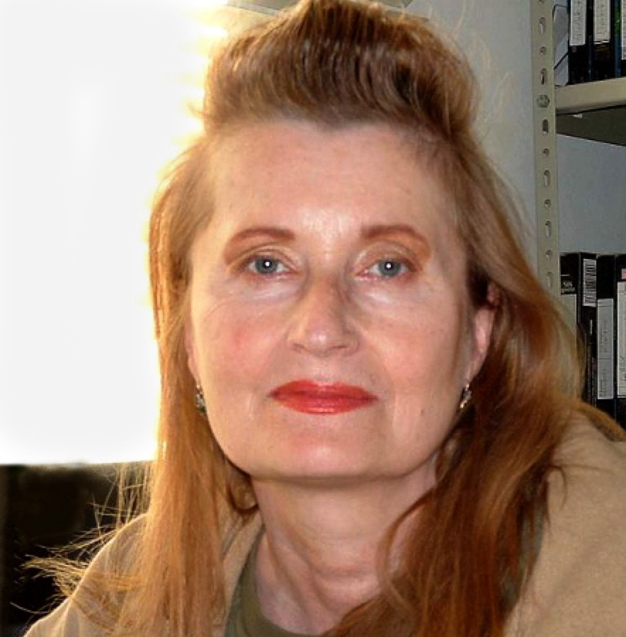
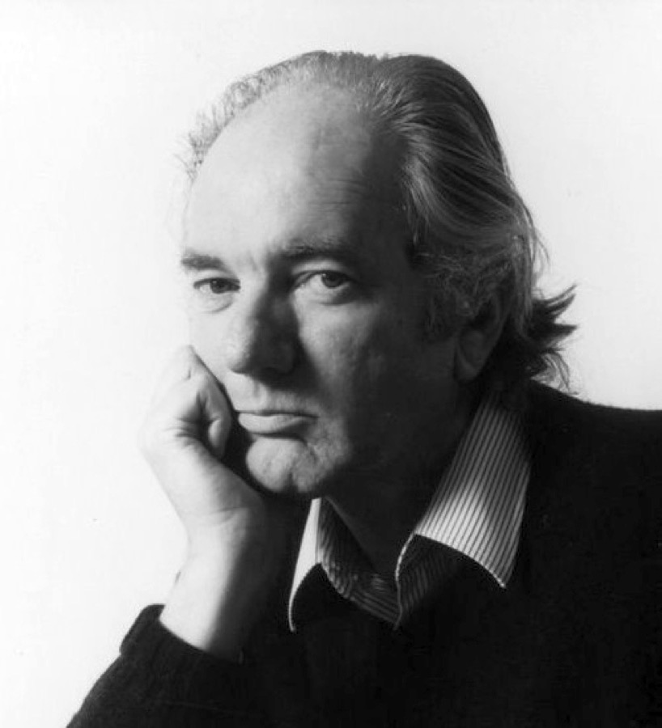
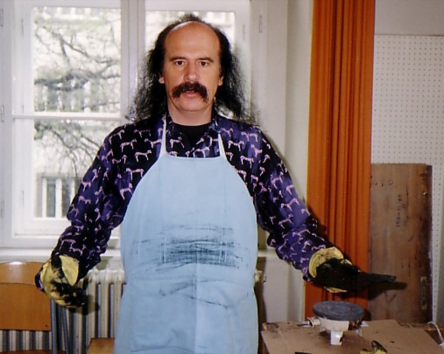
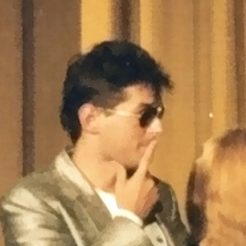
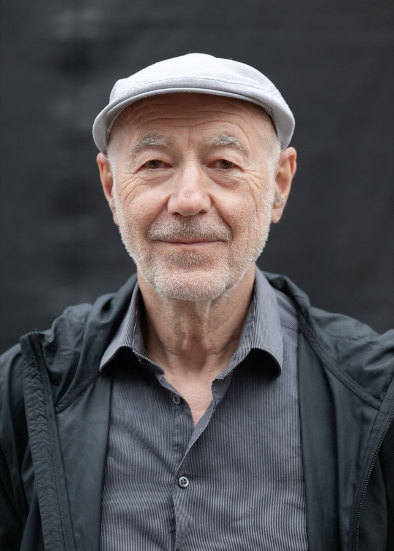
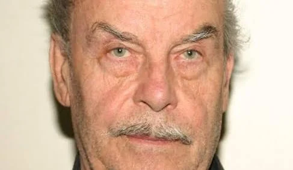